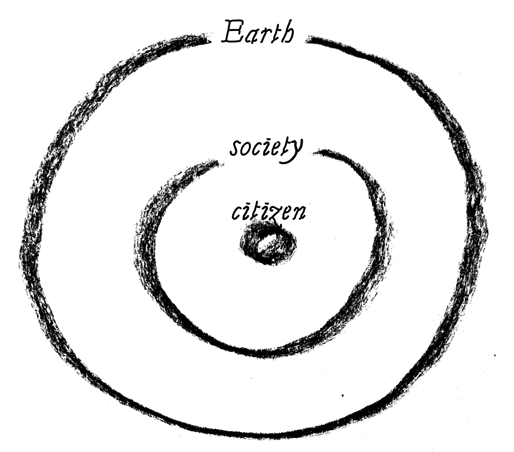

relationship
planetaarinen kansalaisuus
Our present way of life is based on our current culture. It dictates what we consider a good life worth pursuing. Unlike often thought, multidisciplinary research group BIOS notes that culture has never been stable, but rather always in a continual flux which can intensify surprisingly fast.
When technological advancements can not be trusted to cancel out the climate crisis, environmental education plays a big role. What kinds of values, skills and knowledge are needed in the future? How to strengthen solidarity and cooperation among people as well as with non-human nature?
Lately the general anthropocentric attitude towards nature has been questioned more and more. It means looking at nature as something humans have the right to exploit. It implies that humans are separate from nature, which is a contradictory proposition. We fully depend on nature and nature is even inside us.
This challenge can be approached with a notion of planetary citizenship. Contrary to common understanding of citizenship being limited to a specific area, planetary citizenship suggests we are also citizens of planet Earth. The planetary citizen has rights but also responsibilities. Sense of belonging to this bigger entity can help people to organise and take care of the planet that is our home.